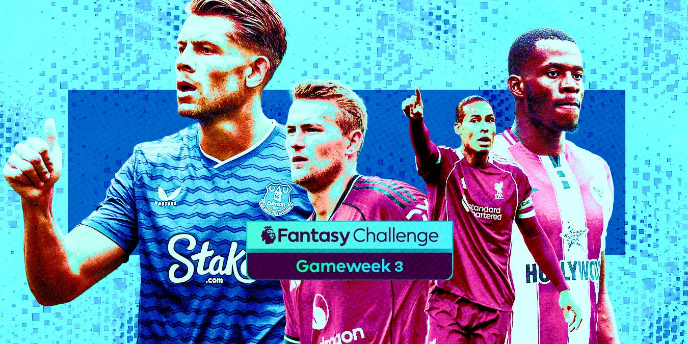

<div class="featured-article-card">
    <a href="articles/fpl-gameweek-3-preview-2025.html" class="featured-link">
        <div class="featured-image-container">
            
            <div class="featured-overlay">
                <span class="featured-category">FPL GAMEWEEK PREVIEW</span>
            </div>
        </div>
        <div class="featured-content">
            <h1 class="featured-title">FPL Gameweek 3 Preview 2025: Best Captain Picks, Transfers, and Tips for Fantasy Premier League GW3</h1>
            <p class="featured-excerpt">Complete FPL Gameweek 3 preview with best captain picks, essential transfers, and strategic tips. Expert analysis of key fixtures, top differentials, and must-have players as the GW3 deadline approaches on August 30, 2025.</p>
            <div class="featured-meta">
                <span class="featured-author">EPL News Hub</span>
                <span class="featured-separator">•</span>
                <span class="featured-date">August 30, 2025</span>
                <span class="featured-separator">•</span>
                <span class="featured-badge">⚡ FPL Preview</span>
            </div>
        </div>
    </a>
</div>

